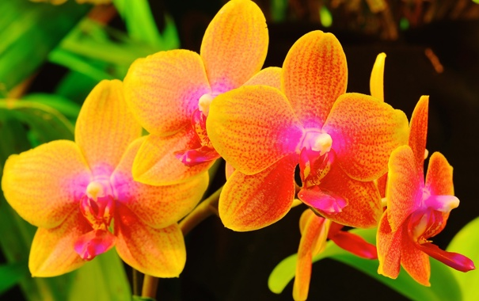

Орхідея - це пишність, прихильність і розкіш. У китайській символіці це досконала людина, гармонія, вишуканість, любов, краса, жіноча чарівність, самітництво вченого.
Орхідея також є китайським символом родючості і талісманом проти безсилля, а також емблемою краси, вченості, вишуканості, дружби. На китайських картинах орхідеї у вазі символізують згоду.
Красива легенда про походження орхідей була у новозеландського племені майори. Вони були впевнені в божественне походження цих квітів. Давним-давно, задовго до появи людей, єдиними видимими частинами землі були засніжені піки високих гір. Час від часу сонце підтавати сніг, змушуючи тим самим воду бурхливим потоком спускатися з гір, утворюючи при цьому чудові водоспади. Ті, у свою чергу, вируючої піною мчали у бік морів і океанів, після чого, випаровуючись, утворювали кучеряві хмари. Ці хмари зрештою зовсім заступили від сонця вид на землю.
Одного разу сонцю захотілося проколоти цей непроникний покрив. Пішов сильний тропічний дощ. Після нього утворилася величезна веселка, обняла все небо.
Захоплені небаченим досі видовищем безсмертні духи - єдині тоді мешканці землі - стали злітатимуться до райдуги з усіх навіть найвіддаленіших країв. Кожному хотілося відхопити містечко на різнобарвному мосту. Вони штовхалися і сварилися. Але потім всі посідали на веселку і дружно заспівали. Мало-помалу веселка прогиналася під їхньою вагою, поки нарешті не звалилася на землю, розсипавшись при цьому на незліченну кількість дрібних різнокольорових іскорок.
Безсмертні духи, досі не бачили нічого подібного, затамувавши подих спостерігали за фантастичним різнобарвним дощем. Кожна частинка землі з вдячністю прийняла осколки небесного мосту. Ті з них, які були спіймані деревами, перетворилися на орхідеї.
З цього і почалася тріумфальна хода орхідей по землі. Різнокольорових ліхтариків ставало все більше і більше, і вже жодна квітка не наважувався заперечувати право орхідеї називатися королевою квіткового царства.
Особливість орхідей полягає в тому, що їх пелюстки можуть мати будь-яку фактуру - від гладкого холодного мармуру і напівпрозорого воску до найніжнішого шовку і іскристого велюру. Навіть на одній рослині не буває двох однакових кольорів. Майже всі орхідеї володіють ароматом вишуканим, тонким і в той же час наповненим цілою гамою відтінків, що нагадують тропічні фрукти і навіть східні прянощі.